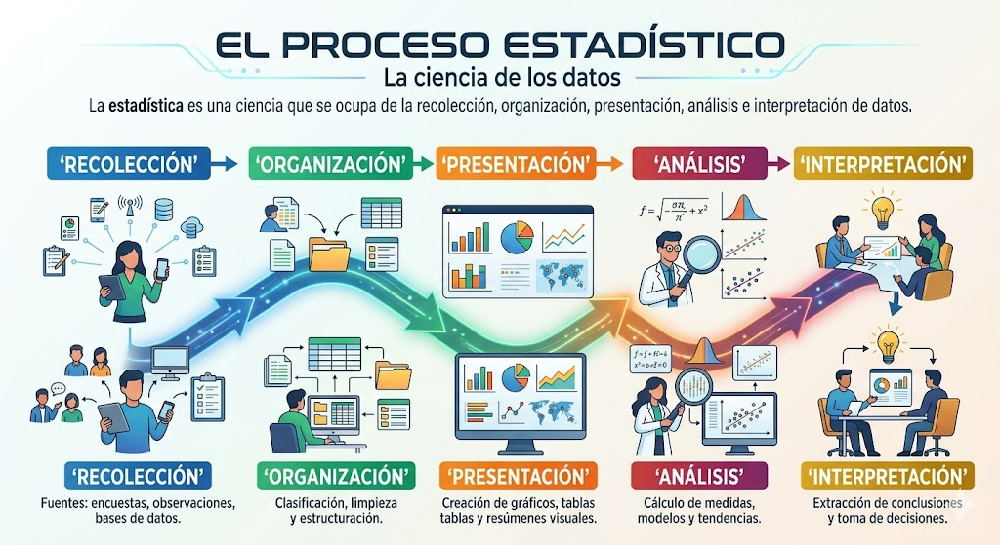
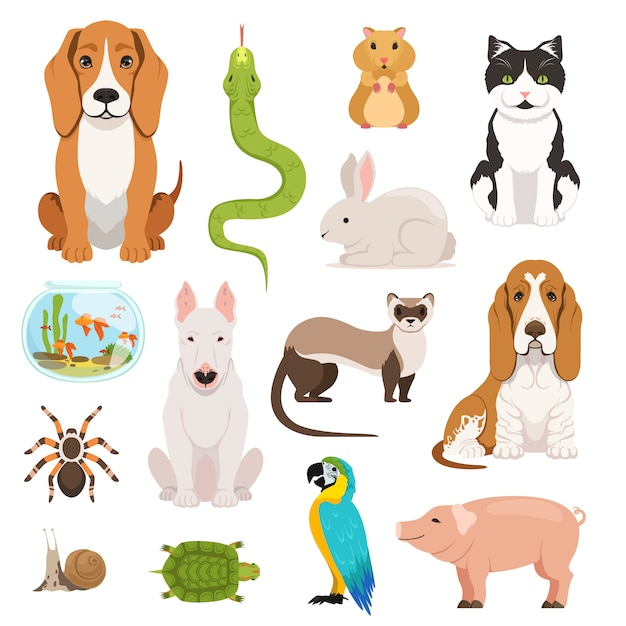

Estadística
Introducción
Objetivo
Construir tablas de frecuencias a partir de datos no agrupados
¿Qué es la estadística?
La estadística es una ciencia que se ocupa de la recolección, organización, presentación, análisis e interpretación de datos.

¿A quiénes estudiamos?
Población
Conjunto de individuos que comparten características comunes y sobre el cual se desea obtener información.
Muestra
Subconjunto de la población seleccionado para el estudio.
¿Qué es lo que queremos saber de nuestra población?
Variable: Característica o cualidad que se está estudiando en la población.
¿Qué características podemos estudiar de la imagen?
En su cuaderno, enumere al menos 5

Tipos de variables
Cualitativas: Expresan cualidades o características. No se pueden expresar con números.
Cuantitativas: Expresan cantidades o números.
Clasifique las variables anteriores en cualitativas o cuantitativas
Indica dos varibales cualitativas y dos cuantitativas de los elementos de la imagen
Frecuencia absoluta
de un valor, es el número de veces que aparece ese valor en el conjunto de datos.
Rango
de un variable, es la diferencia entre el mayor y menor de los datos
- ¿Cual es la frecuencia absoluta de cada valor?
- ¿Cual es el rango del lanzamiento?¿Siempre será el mismo?
- ¿Qué valor salió más?
- ¿Qué valor salió menos?
- Crea una tabla de frecuencia del lanzamiento
- Elija una de las variables anteriores
- ¿Cual es la frecuencia absoluta de cada valor de la variable?
- ¿Cual es el rango?¿Siempre será el mismo?
- ¿Qué valor salió más?
- ¿Qué valor salió menos?
- Crea una tabla de frecuencia para la variable